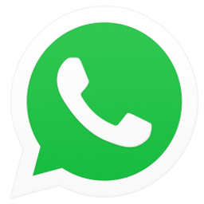
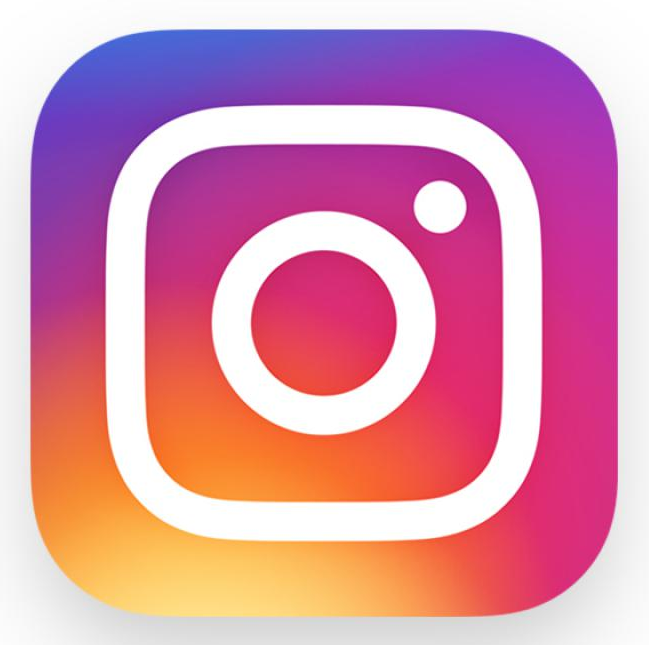

Facebook est un réseau social généraliste, créé en 2004 et rendu public en 2006. Avec 2,5 milliards d’utilisateurs actifs mensuels à travers le monde, c'est le plus large réseau social au monde. Devenu pour beaucoup leur porte d’entrée sur le web, Facebook permet de découvrir de nouveaux contenus, de suivre la vie de vos proches, de chatter et de partager photos et vidéos auprès de vos amis et de vos proches. Facebook propose également des solutions efficaces aider les entreprises à toucher leurs clients
YouTube
YouTube est un réseau social vidéo, créé en 2005.
Avec 1,9 milliards d’utilisateurs actifs mensuels à travers le monde,
c'est la plus grande plateforme pour regarder et partager vos vidéos en ligne.
Dailymotion est un autre exemple de réseau social vidéo et
TikTok est un réseau social vidéo chinois.

WhatsApp est un réseau social pour mobile, créé en 2009. Avec 1,6 milliard d’utilisateurs actifs mensuels à travers le monde, cette application mobile gratuite permet de passer des appels et d’envoyer des messages gratuitement lorsque l’on dispose d’une connexion iinternet, depuis et vers n’importe quel pays du monde. Très populaire, l’application est également très sécurisée et permet d’intéragir avec ses contacts en partageant des Status.

Instagram est un réseau social visuel, créé en 2010.
Avec 1 milliard d’utilisateurs actifs mensuels à travers le monde,
c'est le réseau social visuel le plus utilisé aujourd'hui.
Cette application permet de partager des photos et des vidéos avec
son réseau d’amis et de laisser des commentaires
sur les clichés déposés par les autres utilisateurs.
Snapchat et Pinterest sont d'autres exemples de réseaus sociaux visuels.
Twitter est un réseau social de microblogage, créé en 2006.
Avec 321 millions d’utilisateurs actifs mensuels à travers le monde,
cette application est utilisée comme chat public avec un noyau dur d'amis,
d'entreprises, marques, médias, journalistes, experts techniques, influenceurs.
Le Microblogage (microblogging en anglais) permet à des internautes de publier
des messages courts (280 caratcères maximum pour twitter) pour exprimer une opinion,
donner un avis ou encore partager un contenu ou une information en temps réel.
L’ensemble de ces messages constitue un flux.
D’autres utilisateurs peuvent s’abonner à ce flux,
par exemple via des flux RSS, ou en devenant des followers
dans le cas d’un compte Twitter.
Tumblr est une autre plate-forme de microblogage créée en 2007 qui compte
800 millions d’utilisateurs actifs mensuels.
LinkedIn est un réseau social professionnel, créé en 2003. Cette application compte 260 millions d’utilisateurs actifs mensuels à travers le monde. Disponible dans 24 langues différentes et dans plus de 200 pays, LinkedIn est le réseau social professionnel préféré des professionnels pour sa portée internationale. Il permet en effet à tout utilisateur de construire et d’agréger son propre réseau professionnel à travers le monde. Ce réseau permet de faire venir le client à l’entreprise plutôt que d’aller le démarcher. Avec la construction d’une page “entreprise”, LinkedIn permet à toute organisation de présenter son business. Il permet également de créer puis de partager des actualités de son secteur pour intéresser de potentiels clients et collaborateurs.